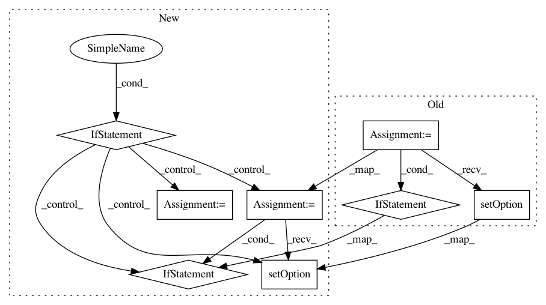

30a1ef9065d8f6f1df870d41c53738e01134d1af,ilastik/applets/base/appletSerializer.py,AppletSerializer,repairFile,#AppletSerializer#Any#Any#,676
Before Change
if c == QMessageBox.Cancel:
raise RuntimeError("Could not find external data: " + path)
dlg = QFileDialog( None, "repair files", path, filt )
dlg.setOption( QFileDialog.HideNameFilterDetails, False )
dlg.setOption( QFileDialog.DontUseNativeDialog, False )
dlg.setViewMode( QFileDialog.Detail )
if dlg.exec_():
return str(dlg.selectedFiles()[0])
else:
raise RuntimeError("Could not find external data: " + path)
//////////////////////////////////////////////
// Optional methods //
//////////////////////////////////////////////
def initWithoutTopGroup(self, hdf5File, projectFilePath):
Optional override for subclasses. Called when there is no
top group to deserialize.
After Change
if c == QMessageBox.Cancel:
raise RuntimeError("Could not find external data: " + path)
if ilastik_config.getboolean("ilastik", "debug"):
dlg = QFileDialog( None, "repair files", path, filt )
dlg.setOption( QFileDialog.HideNameFilterDetails, False )
dlg.setOption( QFileDialog.DontUseNativeDialog, False )
dlg.setViewMode( QFileDialog.Detail )
if dlg.exec_():
return str(dlg.selectedFiles()[0])
else:
raise RuntimeError("Could not find external data: " + path)
else:
fileName = QFileDialog.getOpenFileName( None, "repair files", path, filt )
if fileName.isEmpty():
raise RuntimeError("Could not find external data: " + path)
else:
return str(fileName)
//////////////////////////////////////////////
// Optional methods //
//////////////////////////////////////////////
def initWithoutTopGroup(self, hdf5File, projectFilePath):
Optional override for subclasses. Called when there is no
top group to deserialize.
In pattern: SUPERPATTERN
Frequency: 3
Non-data size: 8
Instances
Project Name: ilastik/ilastik
Commit Name: 30a1ef9065d8f6f1df870d41c53738e01134d1af
Time: 2013-04-09
Author: ben-heuer@web.de
File Name: ilastik/applets/base/appletSerializer.py
Class Name: AppletSerializer
Method Name: repairFile
Project Name: ilastik/ilastik
Commit Name: 30a1ef9065d8f6f1df870d41c53738e01134d1af
Time: 2013-04-09
Author: ben-heuer@web.de
File Name: ilastik/applets/dataSelection/dataSelectionGui.py
Class Name: DataSelectionGui
Method Name: getImageFileNamesToOpen
Project Name: ilastik/ilastik
Commit Name: 37a13d39b78c63788f5e958255f00b3364b9e4fc
Time: 2014-06-10
Author: ullrich.koethe@iwr.uni-heidelberg.de
File Name: ilastik/applets/dataSelection/dataSelectionGui.py
Class Name: DataSelectionGui
Method Name: getImageFileNamesToOpen